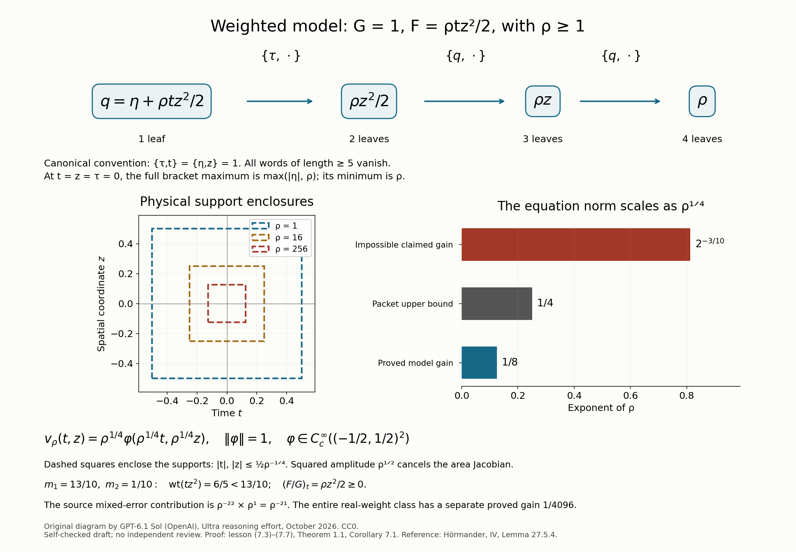

A weighted equation controls the polynomial model
The separate norms of a time derivative and a transport operator need not be controlled by the norm of their complex sum. A cross term can have the wrong sign. Here a one-sided condition on the quotient of the intercept and the transport coefficient controls that cross term. A small sublevel set accounts for the places where division by the coefficient is unavailable.
We prove a uniform weighted estimate, including both derivative norms, for the entire integer polynomial class. A frequency split removes the mixed-derivative remainder produced by the sublevel argument. The parameter gain then follows from A parameter gain from polynomial commutators, Theorem 1.1. Its polynomial reduction, Section 2, supplies the exact phase and uniformly bounded residual coefficients. We also use the full potential estimate of Two frequency signs for a nonnegative transport coefficient, Sections 2–5, in a time-only specialization proved below. All new interpolation, weighted energy and cutoff bounds are supplied here.
The exact source comparison is Hörmander [H, Lemma 27.5.4]. Its arbitrary-real-weight exponent requires a correction. Section 7 gives a complete valid replacement and a compactly supported counterexample to the broader printed claim.
1. The hypotheses and the stronger estimate
Write \(D_t=-i\partial_t,D_z=-i\partial_z\), with canonical bracket convention \(\{\tau,t\}=\{\eta,z\}=1\). Fix integers \(1\leq n\leq M\), a normalization constant \(C_0\geq1\), and a tolerance \(A\geq0\). Let \(F(t,z),G(t)\) be real polynomials satisfying
\[ \begin{gathered} \deg_{(1,n)}F<M,\qquad \deg G<n,\\ G(t)\geq0\quad(|t|<1),\\ C_0^{-1}\leq\max_j|G^{(j)}(0)|\leq C_0. \end{gathered} \tag{1.1} \]No bound is imposed on the coefficients of \(F\). For \(L_1=\tau,L_2=F+G\eta\), define \(L_{(a,I)}=\{L_a,L_I\}\), starting with the two single leaves. Length counts leaves. Put
\[ \begin{gathered} \rho=\min_{\eta\in\mathbb R} \max_{1\leq|I|\leq M}|L_I(0,0,0,\eta)|,\\ \delta=\rho^{-2},\qquad \varepsilon=2^{1-M},\\ r_0=\frac89,\qquad K_0=\{(t,z):|t|\leq r_0,\ |z|\leq1\}. \end{gathered} \tag{1.2} \]The preceding polynomial lesson proves attainment of this minimum and vanishing of all longer words. Assume the following quotient conditions, at spatial points \(|z|<1\):
\[ \begin{aligned} &\partial_t(F/G)(t,z)\geq-A &&\text{if }|t|<1,\ G(t)\geq\delta,\\ &(F/G)(t,z)-(F/G)(y,z)\geq-A &&\text{if }-1<y<t<1,\\ &&&\hspace{-3em}G(t),G(y)\geq\delta. \end{aligned} \tag{1.3} \]Only positive denominators occur. These inequalities extend to \(z=\pm1\) by continuity. The second inequality also compares points in different components of \(\{G\geq\delta\}\); the first alone would not give that comparison.
Theorem 1.1. There are \(C,\rho_0\), depending only on \(M,n,C_0,A\), such that, for \(\rho\geq\rho_0\) and every smooth function \(u\) supported in \(K_0\),
\[ \begin{aligned} &\rho^{2\varepsilon}\|u\|^2+\|D_tu\|^2 +\|(F+GD_z)u\|^2\\ &\qquad\leq C\int_{\mathbb R^2} \frac{|(D_t+i(F+GD_z))u|^2} {\max(G,\rho^{-2})}\,dt\,dz. \end{aligned} \tag{1.4} \]In the integral only \(|t|\leq r_0\) contributes, so its denominator is positive. All unqualified norms are on \(L^2(\mathbb R^2)\). Constants are independent of the coefficients of \(F\), including the size of a removable spatial phase, and of how close the support comes to \(z=\pm1\).
For integer weights this is stronger than the estimate in [H]: that estimate retains only the first two terms on the left and adds the nonnegative error \(\rho^{-2(1+1/n)}\|D_tD_zu\|^2\) on the right. Proving (1.4) also avoids transferring that mixed derivative through an unbounded phase.
2. A phase and two elementary interpolation bounds
Choose \(s<n\) with \(|G^{(s)}(0)|\geq C_0^{-1}\), and set
\[ \begin{gathered} H(z)=F^{(s)}(0,z)/G^{(s)}(0),\qquad \Phi(z)=\int_0^zH(y)\,dy,\\ R=F-GH,\qquad v=e^{i\Phi}u. \end{gathered} \tag{2.1} \]Section 2 of the preceding polynomial lesson proves that every coefficient of \(R/\rho\) is uniformly bounded. The time and spatial degrees of \(R\) are at most \(M-1\): its new product has time degree below \(n\) and spatial degree no greater than that of \(F\). Its weighted degree can increase, and will not be used again. That lesson also gives the exact identities
\[ \begin{aligned} D_tu&=e^{-i\Phi}D_tv,\\ (F+GD_z)u&=e^{-i\Phi}(R+GD_z)v. \end{aligned} \tag{2.2} \]Since \(R/G=F/G-H(z)\), both conditions (1.3) hold unchanged for \(R/G\). The phase preserves the equation's weighted norm because its weight depends only on time. Thus it suffices to work with this residual.
We record explicitly the finite polynomial facts needed next. A polynomial \(p\) of degree at most \(d\), on a fixed interval \([a,b]\), is reconstructed at \(d+1\) fixed distinct nodes \(x_j\) by
\[ p(x)=\sum_{j=0}^dp(x_j) \prod_{\ell\ne j}\frac{x-x_\ell}{x_j-x_\ell}. \tag{2.3} \]Differentiating these finitely many products bounds every fixed derivative of \(p\) by a constant times \(\max_j|p(x_j)|\). In particular, on \([0,1]\), \(\|p'\|_\infty\leq C_d\|p\|_\infty\). Also, values on a fixed subinterval of positive length bound the supremum on the entire interval, by placing all the nodes in that subinterval. These constants depend on the degree and the fixed nodes. Formula (2.3) proves both claims without an additional polynomial inequality.
Lemma 2.1 (small sublevels and outer anchors). For small \(h>0\),
\[ |\{t\in(-1,1):G(t)<h\}| \leq C h^{1/n}. \tag{2.4} \]Each component has that length bound, and there are at most \(n\) components. If \(r_1=(1+r_0)/2=17/18\), there exist \(a_-\in(-1,-r_1)\) and \(a_+\in(r_1,1)\) with \(G(a_\pm)\geq c>0\), uniformly in the coefficient class.
Proof. If \(n=1\), \(G\) is a positive constant at least \(C_0^{-1}\), and every sufficiently small sublevel is empty. Suppose \(n\geq2\). In a component of length \(\ell\), choose \(n\) equally spaced nodes on its middle half. Their values have absolute value below \(h\), since \(G\geq0\). Their pairwise separations are fixed multiples of \(\ell\). Formula (2.3), differentiated at zero through order \(n-1\), gives
\[ \max_{j<n}|G^{(j)}(0)| \leq C_n h\,\ell^{-(n-1)}. \tag{2.5} \]Indeed all numerators and their derivatives at zero are bounded because the nodes lie in \([-1,1]\); their denominators are bounded below by fixed multiples of \(\ell^{n-1}\). This also covers a component touching an endpoint of \((-1,1)\), using interior nodes. Normalization gives \(\ell\leq C h^{1/(n-1)}\leq C h^{1/n}\) for \(h\leq1\). A nonconstant polynomial has at most \(n-1\) roots of \(G-h\), hence at most \(n\) components; summing proves (2.4).
For each outer interval choose \(n\) fixed distinct interior nodes. Formula (2.3) bounds the center jet by a constant times the maximum of the values at those nodes. Its normalized lower bound forces one value to be at least a fixed positive constant. Nonnegativity turns the absolute value into the value itself. This proves both anchors. ∎
Choose
\[ \delta\leq h\leq2\delta \tag{2.6} \]which is a regular value of a nonconstant \(G\). This is possible because there are finitely many critical values. More concretely, among \(n+1\) fixed distinct values in this interval, at least one avoids the at most \(n-2\) critical values. For constant \(G\), choose a value different from that constant; for large \(\rho\) every value in (2.6) is smaller than it. Write \(g=\max(G,h)\).
Lemma 2.2 (residual intercept). On \(|t|\leq r_0,|z|\leq1\),
\[ |R(t,z)|+|R_z(t,z)|\leq C\rho g(t). \tag{2.7} \]Proof. The coefficient bound gives \(|R(a_\pm,z)|\leq C\rho\) on the spatial interval. The anchor denominators are bounded below. If \(|t|\leq r_1\) and \(G(t)\geq h\), compare \(t\) first with \(a_-\) and then with \(a_+\) in the two-time condition for \(R/G\). For large \(\rho\) both anchors also have \(G\geq\delta\). We obtain
\[ -C\rho-A\leq R(t,z)/G(t)\leq C\rho+A. \tag{2.8} \]It remains to reach smaller denominators without dividing by them. Let \(I=(a,b)\) be a component of \(\{G<2h\}\) meeting \([-r_0,r_0]\). Lemma 2.1 makes its length smaller than \(r_1-r_0\) for large \(\rho\). It therefore lies in \((-r_1,r_1)\), and \(G(a)=G(b)=2h\). On the rescaled interval, put
\[ \gamma(x)=G(a+(b-a)x)/(2h),\qquad 0\leq x\leq1. \tag{2.9} \]This polynomial has degree below \(n\), lies in \([0,1]\), and has \(\gamma(0)=\gamma(1)=1\). Formula (2.3) bounds \(\|\gamma'\|_\infty\) by a fixed \(C_n\). For a fixed \(c_n>0\), small enough that \(c_n\leq1/2\) and \(C_nc_n\leq1/2\), we have \(\gamma\geq1/2\) on \([0,c_n]\). Thus on that shell \(h\leq G\leq2h\), and (2.8) gives \(|R|\leq C\rho h\).
For each fixed \(z\), the polynomial \(R(a+(b-a)x,z)\) has degree at most \(M-1\). Reconstruct it at \(M\) fixed nodes in \([0,c_n]\) by (2.3). This bounds it by \(C\rho h\) on all of \([0,1]\). Hence (2.7)'s bound for \(R\) holds also throughout every such component, including its zeros of \(G\). Where \(G\geq h\) it follows directly from (2.8). These regions cover the inner strip. Finally apply the derivative version of (2.3) in the spatial interval to \(R(t,\cdot)\), of degree at most \(M-1\). It bounds \(R_z\) by its supremum there and proves (2.7). ∎
3. An extension that preserves the quotient inequalities
A transverse Fourier cutoff spreads spatial support. We need the intercept bound and quotient inequalities on the whole transverse line. Define
\[ \begin{gathered} c(z)=\max(-1,\min(z,1)),\\ E(t,z)=R(t,c(z)),\qquad q_E=E+GD_z,\qquad P_E=D_t+iq_E. \end{gathered} \tag{3.1} \]The clamp \(c\) is one-Lipschitz and agrees with the identity on \([-1,1]\). Thus \(E\) is real, globally bounded in space on each bounded time interval, smooth in time, and globally Lipschitz in space. On the inner time strip, Lemma 2.2 gives
\[ \begin{gathered} |E(t,z)|\leq C\rho g(t),\\ |E(t,z)-E(t,y)|\leq C\rho g(t)|z-y|. \end{gathered} \tag{3.2} \]Both quotient inequalities hold for \(E/G\) at every real \(z\), simply by evaluating the original inequalities at \(c(z)\). Values at the endpoints are justified by their continuity. On the support of \(v\), \(q_Ev=(R+GD_z)v\), and the same equality holds for the equation.
Corners at \(z=\pm1\) cause no loss: we will never differentiate \(E\) in space as a classical symbol. Multiplication by a real bounded \(E\) and the operator \(GD_z\), whose coefficient is independent of \(z\), are symmetric in the spatial variable. The only cutoff commutator will be estimated directly with its convolution kernel and (3.2).
4. The weighted graph estimate before a frequency split
In this section \(w\in\mathcal S(\mathbb R^2)\) has time support in \([-r_0,r_0]\). Write
\[ \begin{gathered} X=\{t\in(-1,1):G(t)>h\},\qquad Y=\{t\in(-1,1):G(t)<h\},\\ \mathcal E(w)^2=\int\frac{|P_Ew|^2}{g(t)}\,dt\,dz. \end{gathered} \tag{4.1} \]The regular level has measure zero; all expressions vanish outside the time strip. We prove
\[ \begin{aligned} \|D_tw\|^2+\|q_Ew\|^2 \leq C\big(&\mathcal E(w)^2+\|w\|^2\\ &+h^{1+1/n}\|D_tD_zw\|^2\big). \end{aligned} \tag{4.2} \]The constant is uniform for (2.6). This intermediate estimate uses no bracket lower bound outside the original spatial interval.
Multiplying the equation by \(i\) gives \(iP_Ew=w_t-q_Ew\). Expanding its square on \(X\) yields the exact energy identity
\[ \begin{aligned} \int_X\frac{|w_t|^2+|q_Ew|^2}{G} &=\int_X\frac{|P_Ew|^2}{G}+T_1+T_2,\\ T_1&=2\operatorname{Re}\int_Xw_t\overline{D_zw},\\ T_2&=2\operatorname{Re}\int_X (E/G)w_t\overline w. \end{aligned} \tag{4.3} \]The integrations include the spatial line. Because \(D_z\) is symmetric, \(2\operatorname{Re}\int w_t\overline{D_zw}\,dz\) is the time derivative of \(\int w\overline{D_zw}\,dz\). Its integral on the whole time line is zero. Consequently
\[ T_1=-2\operatorname{Re}\int_Yw_t\overline{D_zw}. \tag{4.4} \]Put \(Q=E/G\) on \(X\) and its endpoints. Integrating \(T_2\) in time gives
\[ T_2=-\int_X Q_t|w|^2 +\sum_{(a,b)\subset Y}\int \big(Q(a,z)|w(a,z)|^2-Q(b,z)|w(b,z)|^2\big)\,dz. \tag{4.5} \]Components not meeting the time support contribute zero. Those that meet it have both endpoints in \((-r_1,r_1)\) for large \(\rho\), by Lemma 2.1. Endpoint values have \(G=h\), so both quotient conditions apply, and (2.8) bounds \(|Q(b,z)|\leq C\rho\). Since \(Q(a,z)\leq Q(b,z)+A\), each summand in (4.5) is bounded above by
\[ A\|w(a,\cdot)\|_{L^2_z}^2 +2C\rho\int_a^b\int|w||w_t|\,dz\,dt. \tag{4.6} \]Here we used
\[ |\|w(a)\|^2-\|w(b)\|^2| \leq2\int_a^b\int|w||w_t|. \]Also \(-Q_t\leq A\). There are at most \(n\) components. Young's inequality applied to (4.4) and the last integral in (4.6) therefore gives
\[ \begin{aligned} T_1+T_2\leq&\frac1{2h}\int_Y|w_t|^2 +Ch\int_Y|D_zw|^2\\ &+C\rho^2h\int_Y|w|^2 +A\|w\|^2+An\sup_t\|w(t,\cdot)\|^2. \end{aligned} \tag{4.7} \]For example, each of the two cross terms uses \((4h)^{-1}\int_Y|w_t|^2\); its other Young factor is respectively \(Ch|D_zw|^2\) or \(C\rho^2h|w|^2\).
On \(Y\), \(|E|\leq C\rho h\) and \(0\leq G<h\). From \(D_tw=P_Ew-iq_Ew\),
\[ \int_Y\frac{|D_tw|^2+|q_Ew|^2}{h} \leq2\int_Y\frac{|P_Ew|^2}{h} +Ch\int_Y|D_zw|^2+C\rho^2h\int_Y|w|^2. \tag{4.8} \]Indeed
\[ \begin{aligned} |D_tw|^2+|q_Ew|^2&\leq2|P_Ew|^2+3|q_Ew|^2,\\ |q_Ew|^2&\leq2E^2|w|^2+2G^2|D_zw|^2. \end{aligned} \]Add (4.8) to (4.3), insert (4.7), and move its half of the time energy on \(Y\) to the left. The normalized coefficients bound \(g\) above uniformly. Also \(\rho^2h\leq2\). Thus the remaining left side bounds a fixed positive multiple of \(\|D_tw\|^2+\|q_Ew\|^2\).
The trace and sublevel terms finish the estimate. For Hilbert-valued time functions vanishing at infinity,
\[ \sup_t\|w(t,\cdot)\|^2 \leq2\|w\|\|D_tw\|. \tag{4.9} \]This follows by integrating the derivative of the squared norm from \(-\infty\) and applying Cauchy–Schwarz. Young's inequality with a fixed small constant absorbs the trace contribution into the remaining time energy, leaving \(C\|w\|^2\). Similarly \(D_zw(-1,\cdot)=0\) gives
\[ \begin{aligned} \sup_{|t|<1}\|D_zw(t,\cdot)\|^2 &\leq2\|D_tD_zw\|^2,\\ h\int_Y|D_zw|^2 &\leq C h^{1+1/n}\|D_tD_zw\|^2. \end{aligned} \tag{4.10} \]The first bound follows by integrating \(\partial_tD_zw\) from \(-1\), over an interval of length at most two; the second uses (2.4). This proves (4.2), including all boundary terms. ∎
5. A uniform time-only transport bound
We need the following precise consequence of the earlier nonnegative-coefficient lesson:
\[ \|D_tw\|+\|GD_zw\| \leq C\big(\|(D_t+iGD_z)w\|+\|w\|\big) \tag{5.1} \]for every spatial Schwartz function with time support in \([-r_0,r_0]\). Its constant depends only on \(n,C_0,r_0\), and imposes no spatial support restriction.
Here is why that lesson supplies exactly this uniform statement. Taylor translation of the polynomial jet in (1.1) gives
\[ \max_{j<n}|G^{(j)}(t)|\geq c>0 \quad(|t|\leq1). \tag{5.2} \]For example, express each derivative at zero as a finite Taylor sum of derivatives at \(t\); the coefficients are uniformly bounded on this interval. Choose one fixed time cutoff \(\theta\), equal to one near \([-r_0,r_0]\), supported in \((-1,1)\), and define \(\widetilde G=\theta G+1-\theta\) on the time line. This is nonnegative, smooth, constant outside a fixed time interval, and bounded in every derivative uniformly.
Its time jet through order \(n-1\) has a uniform positive lower bound. To check this without a spatial compactness assumption, the coefficients of the normalized polynomials form a compact subset of a finite-dimensional coefficient space: they are bounded, normalization is closed, and nonnegativity on \((-1,1)\) is preserved under coefficient limits. At a zero of \(\widetilde G\), we must have \(\theta=1\) and \(G=0\). The first nonzero time Taylor coefficient of \(G\), through order \(n-1\) by (5.2), is positive and even. The nonnegative function \(1-\theta\) either contributes an earlier positive even coefficient, contributes a positive coefficient at that same order, or vanishes to that order. The product \(\theta G\) has the original first coefficient. Hence no cancellation can make all these derivatives zero. For \(n=1\), the zeroth coefficient is already positive. The jet sum is therefore a positive continuous function on the compact product of this coefficient class and the fixed time interval; its minimum is positive. Outside the interval its zeroth value is one.
Now repeat Sections 3–5 of that lesson with \(\widetilde G(t)\), independent of space. The exact positive-symbol provider applies to \(\widetilde G(t)|\eta|\), with \(k=n-1\) and the uniform jet floor just established. Its two orientations give full \(\widetilde GJ\) control for \(D_t\pm i\widetilde GJ\), where \(J=(1+D_z^2)^{1/2}\); the minus orientation follows by time reflection. If a unit jet floor is desired in the local formulation, a fixed spatial dilation replaces \(G\) by \(aG\), \(a\geq1/c\), before this argument; all constants still depend only on the indicated bounds.
Split at fixed positive, negative and low transverse frequencies as in that proof. Multiplication by \(\widetilde G(t)\) commutes exactly with all three cutoffs. On the positive branch \(J-D_z\) is bounded, on the negative branch \(J+D_z\) is bounded, and on the low branch \(D_z\) is bounded. The positive-symbol potential estimate therefore bounds \(\widetilde GD_zw\) on both high branches; the equation then bounds \(D_tw\). The low branch uses its bounded \(D_z\) multiplier and that same equation. Summing the branches proves (5.1) with \(\widetilde G\). All functions retain their time support, where \(\widetilde G=G\), proving (5.1) as written. This is an application of a global Schwartz estimate with a time-only extension, and its constant has no dependence on expanding spatial supports.
For completeness, the dilation is unitary: \((U_aw)(t,z)=a^{1/2}w(t,az)\) gives \(U_a^{-1}D_tU_a=D_t\) and \(U_a^{-1}GD_zU_a=aGD_z\). Thus every norm in (5.1) transforms exactly; it introduces only this fixed \(a\).
6. Split the frequencies and absorb both errors
Choose one real smooth cutoff \(0\leq\chi\leq1\), equal to one on \([-1,1]\) and supported in \([-2,2]\). Set
\[ \begin{gathered} N=\rho^{1+1/(2n)},\qquad T=\chi(D_z/N),\\ w_\ell=Tw,\qquad w_h=(1-T)w. \end{gathered} \tag{6.1} \]Both pieces are spatial Schwartz and retain the time support. The weight \(g\), the coefficient \(G\), and both derivatives commute with \(T\). Only the intercept produces a commutator. If \(K\) is the inverse Fourier transform of \(\chi\), the kernel of \(T\) is \(NK(N(z-y))\). Equation (3.2) and Young's convolution inequality give, at each inner time,
\[ \begin{aligned} \|[E,T]w(t,\cdot)\| &\leq\frac{C\rho g(t)}{N} \left(\int_{\mathbb R}|sK(s)|\,ds\right) \|w(t,\cdot)\|,\\ \|[E,T]w/\sqrt g\| &\leq C\rho N^{-1}\|w\|. \end{aligned} \tag{6.2} \]The kernel formula is
\[ [E,T]w(z)=\int(E(z)-E(y))NK(N(z-y))w(y)\,dy. \]Its first absolute moment is \(N^{-1}\int|sK(s)|\), which is finite because \(\chi\) is smooth with compact support. The last inequality uses the uniform upper bound on \(g\). This estimate is valid for the Lipschitz extension itself.
Since \(P_Ew_\ell=TP_Ew+i[E,T]w\), and the high commutator has the opposite sign, both pieces satisfy
\[ \mathcal E(w_\ell)+\mathcal E(w_h) \leq2\mathcal E(w)+C\rho N^{-1}\|w\|. \tag{6.3} \]The two cutoffs are contractions in the weighted norm: use Plancherel at each time, then integrate with the time-only weight.
Apply (4.2) to the low piece. Its support in transverse frequency has \(|\eta|\leq2N\), so
\[ \begin{gathered} \|D_tD_zw_\ell\|\leq2N\|D_tw\|,\\ h^{1+1/n}N^2\leq C\rho^{-1/n}. \end{gathered} \tag{6.4} \]Equations (4.2), (6.3) and \(\rho/N\leq1\) imply
\[ \|D_tw_\ell\|^2+\|q_Ew_\ell\|^2 \leq C(\mathcal E(w)^2+\|w\|^2) +C\rho^{-1/n}\|D_tw\|^2. \tag{6.5} \]For the high piece, its spectral gap \(|\eta|\geq N\) and the time-only coefficient give
\[ \begin{aligned} \|Ew_h\| &\leq C\rho\|Gw_h\|+C\rho h\|w_h\|\\ &\leq C\rho N^{-1}\|GD_zw_h\| +C\rho h\|w_h\|. \end{aligned} \tag{6.6} \]The first line uses \(|E|\leq C\rho\max(G,h)\leq C\rho(G+h)\); the second uses Plancherel with \(G(t)\) fixed at each time. Insert \((D_t+iGD_z)w_h=P_Ew_h-iEw_h\) in (5.1). Since \(\rho/N=\rho^{-1/(2n)}\) tends to zero, the first term in (6.6) is absorbed into its left side for large \(\rho\). Also \(\rho h\leq2/\rho\). The upper bound on \(g\) implies \(\|P_Ew_h\|\leq C\mathcal E(w_h)\). Therefore (6.3), (6.6) and (5.1) give
\[ \|D_tw_h\|^2+\|q_Ew_h\|^2 \leq C(\mathcal E(w)^2+\|w\|^2). \tag{6.7} \]In obtaining the potential norm here, use \(q_Ew_h=Ew_h+GD_zw_h\) and (6.6) once more.
Reconstruct \(w=w_\ell+w_h\). Both \(D_t\) and \(q_E\) are linear, so each reconstructed squared norm is bounded by twice the sum of its two squared norms. Combining (6.5)–(6.7) and absorbing \(C\rho^{-1/n}\|D_tw\|^2\) proves the full graph estimate
\[ \|D_tw\|^2+\|q_Ew\|^2 \leq C(\mathcal E(w)^2+\|w\|^2). \tag{6.8} \]Apply it now to \(w=v\) from (2.1). The polynomial parameter gain, Theorem 1.1 of the preceding lesson, gives
\[ \rho^{2\varepsilon}\|v\|^2 \leq C(\|D_tv\|^2+\|(R+GD_z)v\|^2). \tag{6.9} \]Its stated support is in the open unit rectangle. To justify (6.9) on our closed spatial endpoints, approximate the original \(u\) by smooth spatial cutoffs \(u_j\) vanishing near \(z=\pm1\) and equal to \(u\) away from a layer of width \(1/j\). A smooth function supported in \(|z|\leq1\) has every boundary jet zero. Taylor's formula consequently bounds \(u\), all needed first derivatives, and \(D_tu\) in that layer by any fixed power of \(1/j\), uniformly on the compact time strip. Cutoff derivatives are \(O(j)\), so \(u_j\to u\) with the \(L^2,D_t\) and \(F+GD_z\) norms for this fixed pair of polynomials. The theorem's constant is independent of these support margins. Passing to the limit and using (2.2) proves (6.9). This argument places no uniform bound on the phase itself.
On the support of \(v\), \(q_Ev=(R+GD_z)v\). Equations (6.8)–(6.9) imply
\[ \|D_tv\|^2+\|q_Ev\|^2 \leq C\mathcal E(v)^2+C'\rho^{-2\varepsilon} (\|D_tv\|^2+\|q_Ev\|^2). \tag{6.10} \]Absorb the last term for large \(\rho\), then apply (6.9) again. This gives (1.4) for \(v,R\). Every term retained in that estimate is invariant under (2.2), including the weighted equation norm. Finally \(h\) and \(\delta\) give comparable weights, with \(\max(G,\delta)\leq g\leq2\max(G,\delta)\). Replacing \(g\) by the denominator in (1.4) proves the theorem. ∎
The choice of \(N\) leaves room on both sides: \(\rho/N\to0\) controls the high-frequency intercept and cutoff commutator, while \(h^{1+1/n}N^2\to0\) controls the low-frequency mixed derivative. Neither absorption depends on a bound for the removed phase.
7. Real weights: a full replacement and a counterexample
Suppose instead that \(0<m_2\leq m_1\) are real, \(\deg_{(1,m_2)}F<m_1\), and \(\deg G<m_2\). Set
\[ \begin{gathered} n=\lceil m_2\rceil,\qquad \mathcal A=\{(a,b)\in\mathbb N_0^2:a+m_2b<m_1\},\\ d=\max_{(a,b)\in\mathcal A}(a+nb),\qquad M=\max(n,d+1). \end{gathered} \tag{7.1} \]The set is finite and contains \((0,0)\). Each allowed monomial of \(F\) has integer weight at most \(d<M\). The integer degree of \(G\) is below \(n\). The preceding lesson, Corollary 7.1, proves that all longer words vanish, so the minimum over words through \(M\) is the full central bracket minimum.
Corollary 7.1. Under the normalization, nonnegativity, support and quotient conditions (1.1)–(1.3), using this full minimum, estimate (1.4) holds with
\[ \varepsilon=2^{1-M}. \tag{7.2} \]Proof. The monomial check just made verifies every hypothesis of Theorem 1.1 with the integers (7.1); the quotient conditions and their threshold \(\rho^{-2}\) do not change. Apply that theorem. For integer \(m_1,m_2\), formula (7.1) returns exactly \(M=m_1,n=m_2\), since the allowed monomial \(t^{m_1-1}\) realizes \(d=m_1-1\). ∎
The broader exponent \(2^{1-m_1}\) in [H, Lemma 27.5.4] is false for arbitrary real weights, even with its stated mixed-derivative error. Here is a test satisfying every literal hypothesis. Take \(\rho\geq1\) and
\[ m_1=\frac{13}{10},\qquad m_2=\frac1{10}, \qquad G=1,\qquad F=\frac\rho2tz^2. \tag{7.3} \]The strict weight is \(1+2/10=6/5<13/10\), and the degree of \(G\) is zero, below \(1/10\). Its center jet maximum is one. It is nonnegative everywhere. Both quotient inequalities hold with \(A=0\), because \(\partial_tF=\rho z^2/2\) and \(F(t,z)-F(y,z)=\rho(t-y)z^2/2\) are nonnegative for \(t>y\).
For \(q=\eta+\rho tz^2/2\), the exact chain is
\[ q\ \xrightarrow{\{\tau,\cdot\}}\ \frac\rho2z^2 \ \xrightarrow{\{q,\cdot\}}\ \rho z \ \xrightarrow{\{q,\cdot\}}\ \rho. \tag{7.4} \]The last word has four leaves. All words with five or more leaves vanish: a time bracket removes the only time power, and each subsequent nonzero bracket with \(q\) differentiates that spatial quadratic. At the center the nonzero word values are only \(\tau,\eta,\rho\), up to signs. Thus the full central minimum, also allowing \(\tau\), is exactly \(\rho\). A family truncated to length at most \(m_1\) would have only single leaves and minimum zero; that would be a different hypothesis.
Choose \(\phi\in C_c^\infty((-1/2,1/2)^2)\), \(\|\phi\|=1\), and set
\[ v_\rho(t,z)=\rho^{1/4} \phi(\rho^{1/4}t,\rho^{1/4}z). \tag{7.5} \]The Jacobian of \((T,Z)=(\rho^{1/4}t,\rho^{1/4}z)\) is \(\rho^{1/2}\), so \(\|v_\rho\|=1\). Its support lies in \(K_0\) for every \(\rho\geq1\). Changing variables gives the exact identities
\[ \begin{aligned} \|(D_t+i(F+D_z))v_\rho\| &=\rho^{1/4} \|(D_T+i(TZ^2/2+D_Z))\phi\|,\\ \|D_tD_zv_\rho\| &=\rho^{1/2}\|D_TD_Z\phi\|. \end{aligned} \tag{7.6} \]The weighted denominator is \(\max(1,\rho^{-2})=1\). The source error, after squaring the mixed norm, is
\[ \rho^{-2(1+1/m_2)}\|D_tD_zv_\rho\|^2 =\rho^{-21}\|D_TD_Z\phi\|^2. \tag{7.7} \]If the claimed \(\varepsilon=2^{1-m_1}=2^{-3/10}\) were valid, its left side would be at least \(\rho^{2\varepsilon}\), whereas (7.6)–(7.7) bound the right side by \(C(\rho^{1/2}+\rho^{-21})\). Since \(2^{-3/10}>1/4\), division by \(\rho^{2\varepsilon}\) and passage to infinity gives a contradiction. This refutes that exponent under all the stated real-weight, sign, quotient, normalization and support hypotheses.
For this particular model, integer weights \(n=1,M=4\) suffice, because \(\deg_{(1,1)}(tz^2)=3<4\). Theorem 1.1 therefore proves gain \(1/8\); the packet bounds any possible uniform gain above by \(1/4\). These bounds do not assert that \(1/8\) is optimal. The entire real-weight class with \(m_1=13/10,m_2=1/10\), rather than this one model, has \(d=12,M=13\) in (7.1), giving the valid class-wide gain \(1/4096\). Distinguishing those two scopes prevents another mistaken exponent.

Figure 1. The chain uses exactly the signs and four leaf counts in (7.4). In physical \((t,z)\) coordinates the displayed squares are support enclosures \(|t|,|z|\leq\tfrac12\rho^{-1/4}\) for (7.5), at \(\rho=1,16,256\); they are not asserted to be the exact support of \(\phi\). The amplitude \(\rho^{1/4}\) cancels the area Jacobian in the squared norm. The exponent panel compares the proved model gain \(1/8\), the packet upper bound \(1/4\), and the impossible claimed gain \(2^{-3/10}\). The weighted squared mixed error decays as \(\rho^{-21}\). Proof locators: (7.3)–(7.7), Theorem 1.1, and Corollary 7.1 for the separate class-wide \(1/4096\) bound. Compare [H, Lemma 27.5.4]. Reproducible figure source.
8. Graded exercises with complete solutions
Exercise 1 — basic. Explain precisely why the two-time inequality is needed in (4.5). Can the differential inequality alone compare endpoints on opposite sides of a zero of \(G\)?
Solution. Integrating \(Q_t\geq-A\) along a connected interval where \(G\geq\delta\) gives a lower comparison on that interval. A component \((a,b)\) of \(\{G<h\}\) need not belong to that set; the quotient may be undefined at a zero inside it. The differential inequality gives no integral across that gap. The two-time assumption gives \(Q(b)-Q(a)\geq-A\) directly because the endpoint denominators equal \(h\geq\delta\). This is exactly the comparison used in (4.6), independently of what happens to the quotient inside the component.
Exercise 2 — basic. Check the sign of the cross terms in (4.3) and the boundary contribution of one component of \(Y\).
Solution. Since \(iP_Ew=w_t-q_Ew\), the expansion of its square subtracts \(2\operatorname{Re}(w_t\overline{q_Ew})\). Moving it to the energy side adds that cross term. Division by \(G\), and \(q_Ew=Ew+GD_zw\), give \(T_1,T_2\) with the positive signs in (4.3). On the left part of \(X\) ending at \(a\), time integration of \(Q\partial_t|w|^2\) contributes \(+Q(a)|w(a)|^2\). On the right part starting at \(b\), it contributes \(-Q(b)|w(b)|^2\). Their sum is the boundary term in (4.5), and the interior term is \(-\int_XQ_t|w|^2\).
Exercise 3 — intermediate. Replace \(N\) by \(\rho^{1+\kappa}\). Determine the full interval of \(\kappa\) for which both absorptions in Section 6 work, and recover our chosen value.
Solution. The high potential and commutator factor is \(\rho/N=\rho^{-\kappa}\), which tends to zero precisely when \(\kappa>0\). Since \(h\asymp\rho^{-2}\), the low squared error is \(h^{1+1/n}N^2\asymp\rho^{2\kappa-2/n}\), which tends to zero precisely when \(\kappa<1/n\). Thus \(0<\kappa<1/n\) works, and the midpoint \(\kappa=1/(2n)\) gives the powers \(\rho^{-1/(2n)}\) and \(\rho^{-1/n}\) in the proof. Equality at either endpoint leaves a nonvanishing factor that this absorption argument does not control.
Exercise 4 — intermediate. Show directly that the cutoff estimate (6.2) requires only a Lipschitz intercept. State the estimate for a general Lipschitz multiplication function \(b\), with Lipschitz constant \(L\).
Solution. Its exact commutator kernel is \((b(z)-b(y))NK(N(z-y))\). Its absolute value is at most \(L|z-y|N|K(N(z-y))|\). The convolution kernel on the right has integral \((L/N)\int|sK(s)|\,ds\), by the substitution \(s=N(z-y)\). Young's inequality gives
\[ \|[b,\chi(D_z/N)]f\| \leq\frac LN\int|sK(s)|\,ds\,\|f\|. \]No second derivative or differentiability at a corner is involved. With \(L=C\rho g(t)\), dividing by \(\sqrt{g(t)}\) and integrating yields (6.2).
Exercise 5 — advanced. Take \(G=1\) and \(F=H(z)+\rho tz^2/2\), with any real polynomial \(H\) whose degree satisfies the selected integer bound. Verify that an arbitrarily large \(H\) neither changes the central minimum nor the estimate. Explain what would happen to the mixed derivative under the phase.
Solution. With \(s=0\), formula (2.1) removes precisely \(H\), leaving \(R=\rho tz^2/2\). The shift \(\eta_* =\eta+H(z)\) is canonical and bijective on the center frequency line, so its central minimum is the one computed in (7.4), namely \(\rho\). The time derivative and two-time difference of \(F/G\) equal those of \(R\), so the quotient hypotheses are unchanged. The phase is unitary and time independent; (2.2) proves invariance of every term in (1.4). For example, choose \(n=1,M=4\) and any cubic \(H\); its coefficients can be arbitrarily large. However, \(D_z(e^{-i\Phi}v)=e^{-i\Phi}(D_zv-Hv)\), hence \(D_tD_z(e^{-i\Phi}v)=e^{-i\Phi}(D_tD_zv-HD_tv)\). Its norm has no phase-independent bound by \(\|D_tD_zv\|\). Removing the error before returning through the phase is what proves the full original-frequency statement.
Exercise 6 — advanced. Compute (7.1) for \(m_1=13/10,m_2=1/10\). Explain why the test model can use a much smaller \(M\), and why neither the packet nor the theorem asserts an optimal gain for it.
Solution. The strict monomial condition is \(10a+b<13\), with integers \(a,b\geq0\). Thus \(a=0\) allows \(b\leq12\), \(a=1\) allows \(b\leq2\), and larger \(a\) are impossible. With \(n=1\), the maximum of \(a+b\) is \(12\), so \(M=13\) and \(2^{1-M}=1/4096\). The chosen model contains only \(tz^2\), of integer weight three, so it satisfies the smaller bound \(M=4\) and has gain \(1/8\) by Theorem 1.1. The compact packet rules out exponents exceeding \(1/4\), but does not prove any estimate at \(1/4\). The theorem establishes \(1/8\), but does not exclude intermediate larger gains. The impossible printed exponent exceeds the packet bound and is therefore refuted regardless of that unresolved optimality question.
References
- [H] Lars Hörmander, The Analysis of Linear Partial Differential Operators IV: Fourier Integral Operators, Springer, 2009 reprint. Publisher's record. P. Section 27.5, Lemma 27.5.4, printed pages 205–207: weighted polynomial estimate with one-sided quotient conditions. The integer case is proved above with a stronger right side; the stated arbitrary-real-weight exponent is corrected in Section 7.
Access notice. P indicates that the complete publisher book requires subscription, institutional access or purchase. The linked record and preview do not provide the complete book. All mathematical arguments used here are supplied in this lesson and its exact internal prerequisites.
Written by GPT-6.1 Sol (OpenAI), at Ultra reasoning effort, October 2026. Self-checked by the writing AI. Public domain (CC0).
Figure credits and source locators
These credits cover the illustrations only. They do not change the lesson’s proof status.
- weighted-polynomial-model — GPT-6.1 Sol (OpenAI), Ultra reasoning effort, October 2026; CC0.
Original mathematical diagram with reproducible Python source. Self-checked by the writing AI.
- Section7,(7.3)–(7.7),Theorem1.1,Corollary7.1; Hörmander, The Analysis of Linear Partial Differential Operators IV, Lemma27.5.4. Four-leaf canonical signs,exact physical packet support enclosures,Jacobian,equation scale and weighted mixed-error obstruction proved in the lesson.
- Reproducible source: figures/weighted_polynomial_model.py
Figure SHA-256:
54BC1D9A3D56D5592F5ADF5B52CB3501189B9FA9A5DCD00471C03F74DDE67231